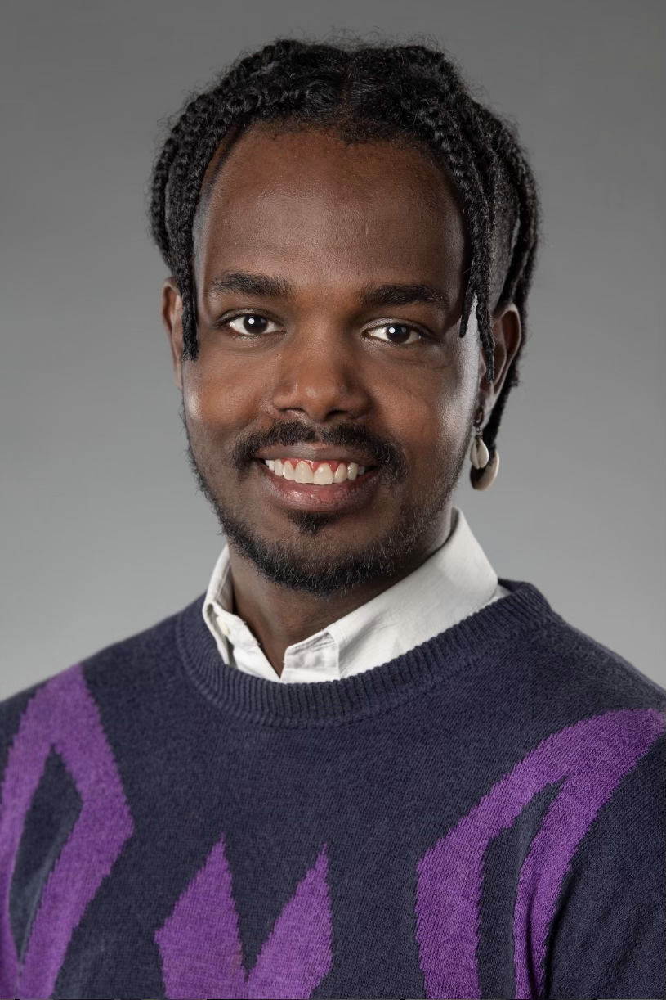

Junior IT Support & Helpdesk Spezialist
Motivierter Quereinsteiger mit einer abgeschlossenen handwerklich-technischen Ausbildung als Unterhaltspraktiker EBA. Technik ist seit vielen Jahren meine Leidenschaft: Ein Großteil meines IT-Wissens rund um Hardware, Betriebssysteme und Netzwerke habe ich mir im Selbststudium und durch praktische Eigenprojekte erarbeitet. Auf der Suche nach einer Einstiegsposition im 1st Level IT Support / Helpdesk, um meine Begeisterung für Fehlersuche und Hilfsbereitschaft bei Anwenderproblemen praxisnah im Team einzubringen.
Praktische Einrichtung und Verwaltung von PCs, Netzwerken und Peripheriegeräten im Eigenlabor.